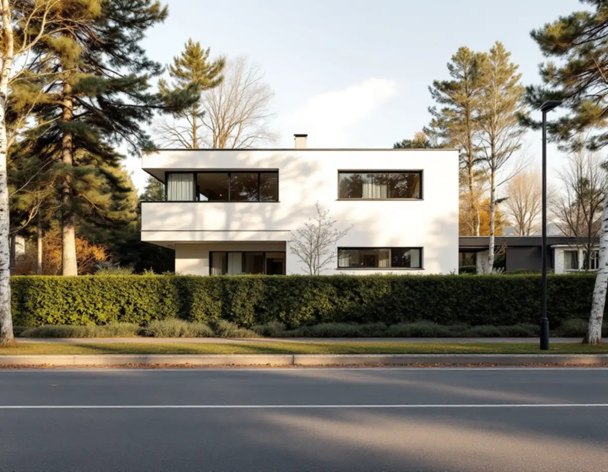
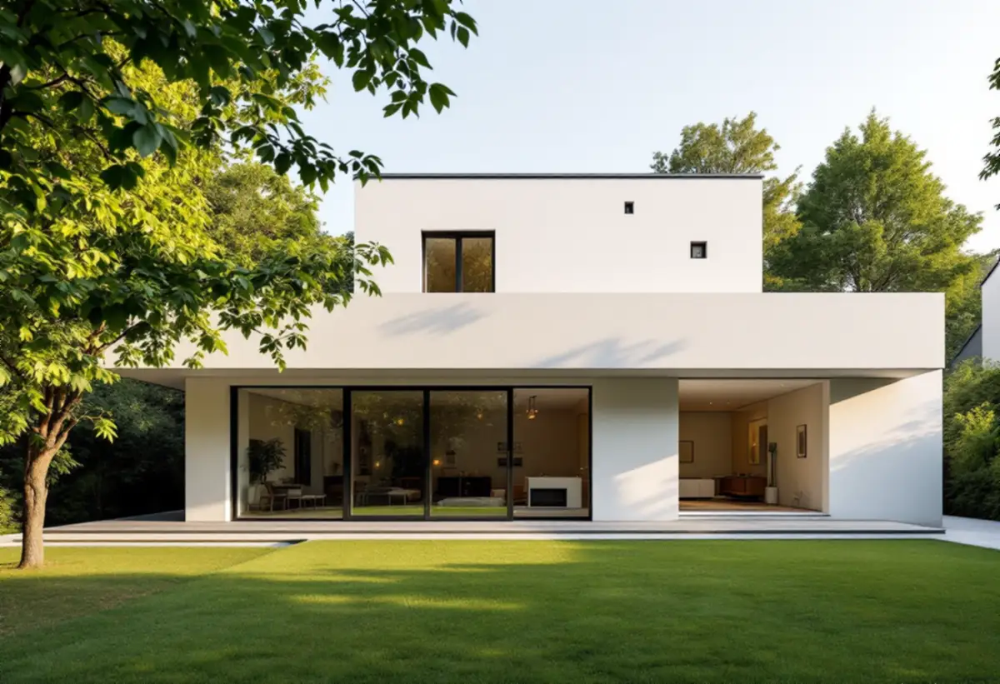

Kulturmiljökartan
Vi ser om huset ligger i ett av riktlinjernas områden och vilken stil det har.
Danderyds riktlinjer för kulturmiljön handlar inte bara om sekelskiftesvillorna i Djursholm. Även funkishusen i Klingsta och Stocksund, grupphusområdena och 1940- och 50-talens villor har egna råd för hur ett hus får växa. Geal Entreprenad AB bygger till villor och småhus som total entreprenad och lämnar ett skriftligt kostnadsförslag efter ett gratis platsbesök. Här går vi igenom vad som gäller för de yngre husen.

Kommunens riktlinjer för kulturhistoriska byggnader och miljöer från 2024 delar in Danderyd i kommundelarna Enebyberg, Danderyd, Djursholm och Stocksund och därefter i 27 numrerade områden. Flera av dem gäller annat än sekelskiftesvillorna: Funktionalism i Klingsta, Grupphusbebyggelse i Danderyd, 1930- till 1950-talet i Djursholm, Grupphusbebyggelse i Djursholm, Funktionalism i Stocksund, Modernism i Stocksund och 1940- och 50-talet i Söderskogen.
För funkisområdena och för 1930–50-talens villor skriver kommunen att byggnadernas ursprungliga arkitektoniska uttryck ska bevaras och vara vägledande vid om- och tillbyggnad. Äldre detaljer som fönster och portar i originalutförande ska värnas, och tidstypisk färgsättning ska vara vägledande när huset målas om.
Riktlinjerna används som vägledning när kommunen bedömer plan- och lovärenden, men de riktar sig också till dig som äger huset. Kommunen råder fastighetsägaren att söka på sin adress i kulturmiljökartan för att se om huset är utpekat och vilken arkitekturstil det tillhör. Det är där vi börjar innan något skissas.

Den tydligaste skillnaden mot en vanlig villatomt är synen på förgårdsmarken. För området 1930- till 1950-talet i Djursholm står det att en tillbyggnad i första hand bör göras så att den inte syns från gatan, och att garage eller carport inte bör placeras mot gatan. I Klingstas funkisområde och i Söderskogen motiverar kommunen samma råd om garaget med att förgårdsmarkens öppna rum mot gatan annars sluts.
I flera av de här områdena återkommer också rådet att undvika stora altandäck, skärmtak och inglasade uteplatser och balkonger mot gatan, och att hålla häckar och staket låga. För Klingsta och Söderskogen skriver kommunen dessutom att ett dubbelgarage i tomtgräns inte är lämpligt, eftersom det skapar en främmande volym i området.
En tillbyggnad på trädgårdssidan är därför ofta den lösning som går lättast att förena med riktlinjerna. Vi ritar in grannhusens placering och volym i skissen, så att det syns hur tillägget förhåller sig till gatan.
I grupphusområdena, både i Danderyd och i Djursholm, ska områdenas enhetliga karaktär mot gaturummet behållas när det gäller husens placering på tomten, volymverkan och utformning. Nya tillägg ska utformas med stor hänsyn till miljöns kulturhistoriska värden och befintlig bebyggelsestruktur. För Modernism i Stocksund bör fasaduttryck som inte hör till 1960- eller 1970-talets stilideal undvikas.
I två av områdena, Funktionalism i Klingsta och Funktionalism i Stocksund, skriver kommunen att ingen ny bebyggelse bör tillkomma inom det särskilt värdefulla området. Den som behöver mer yta där har alltså i första hand det befintliga huset att bygga till, och tillägget ska följa omgivningens placering, utformning och volymverkan.
Marken räknas också. Riktlinjerna vill att sprängning, fyllning och schaktning minimeras och att markutfyllnad med stödmurar undviks. Hur tomt, träd och fornlämningar påverkar ett större bygge beskriver vi under byggföretag i Danderyd.
Ett en- eller tvåbostadshus får byggas till med sammanlagt 30 kvadratmeter utan bygglov, om tillbyggnaden inte går över husets taknock. Danderyds kommun påpekar att tidigare skärmtak och attefallstillbyggnader på huvudbyggnaden räknas in. Enligt Boverket ska tillbyggnaden också ligga minst 4,5 meter från gränsen eller ha grannens skriftliga medgivande, och en lovfri tillbyggnad får strida mot detaljplanen.
Ligger fastigheten i ett kulturhistoriskt särskilt värdefullt område, eller är byggnaden särskilt värdefull, krävs bygglov även för en tillbyggnad som annars hade varit lovfri. Samma sak gäller inom riksintressena för kulturmiljövården. Påverkar tillbyggnaden husets konstruktion krävs dessutom anmälan och startbesked innan arbetet börjar.
Är du osäker på om lovbefrielsen gäller kan du söka ett frivilligt bygglov och få beskedet i förväg. Vi tar fram ritningar och underlag för tillbyggnaden i båda fallen.
Vi ser om huset ligger i ett av riktlinjernas områden och vilken stil det har.
Gatan, förgårdsmarken, trädgårdssidan och grannhusens volymer går vi igenom på plats.
Tillbyggnaden placeras och höjdsätts så att den följer huset och omgivningen.
Du får ett skriftligt förslag där arbete, material och eventuella lovhandlingar står var för sig.
Vi tar fram ritningar för bygglov, frivilligt lov eller anmälan.
Grund, stomme, tak och anslutningar mot det befintliga huset samordnas av oss.
Rotavdraget är 30 procent av arbetskostnaden, högst 50 000 kronor per person och år och högst 75 000 kronor tillsammans med rutavdrag. Material och resor ger inget avdrag.
För ett småhus godkänner Skatteverket en tillbyggnad om någon av dess sidor sitter ihop med husets yttervägg till minst 75 procent, eller om det finns en dörr emellan. Större delen av den ursprungliga stommen ska behållas och bostaden ska vara äldre än fem år. Att ta fram bygglovshandlingar eller anlita arkitekt ger inget avdrag. Vi drar avdraget direkt på fakturan där det gäller.
Tillbyggnadens storlek, grundläggningen på tomten, hur taket ska anslutas och om huset kräver bygglov med särskild hänsyn till originaldetaljer påverkar mest. Efter ett gratis platsbesök får du ett skriftligt kostnadsförslag.
Mer boyta i samma hus.
Tillbyggnad →Takbyte, takbesiktning och plåtarbeten.
Takläggare i Danderyd →Djursholm, Stocksund och Enebyberg.
Takrenovering i Danderyd →Tillbyggnad, tomt och kommunens riktlinjer.
Byggföretag i Danderyd →Villastäder, egnahem och grupphus i Danderyd.
Fasadrenovering i Danderyd →Lovplikt, klassning och spröjs i Danderyd.
Fönsterbyte i Danderyd →Originalgolv i villor från 1890-talet och framåt.
Golvläggare i Danderyd →Rännor, stuprör och beslag i Danderyd.
Plåtslagare i Danderyd →Villastaden, takmaterial och solceller.
Takbyte i Danderyd →Villastäder, ritningar och ventilation.
Badrumsrenovering i Danderyd →Villastäder, egnahem och kommunens regler.
Köksrenovering i Danderyd →Villor, egnahem och grupphus i Danderyd.
Målare i Danderyd →Altaner, staket och carport.
Snickare i Danderyd →